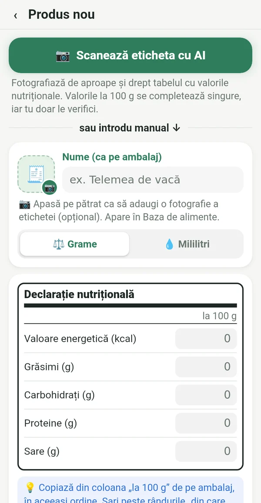
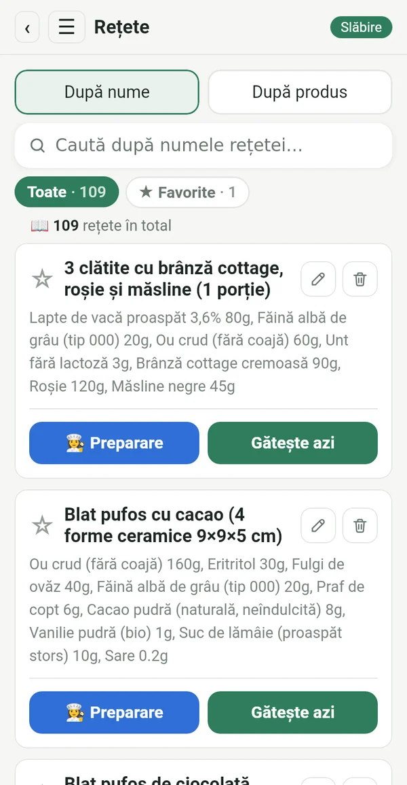
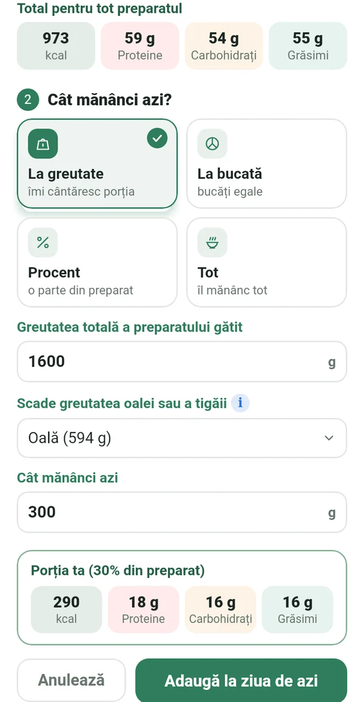
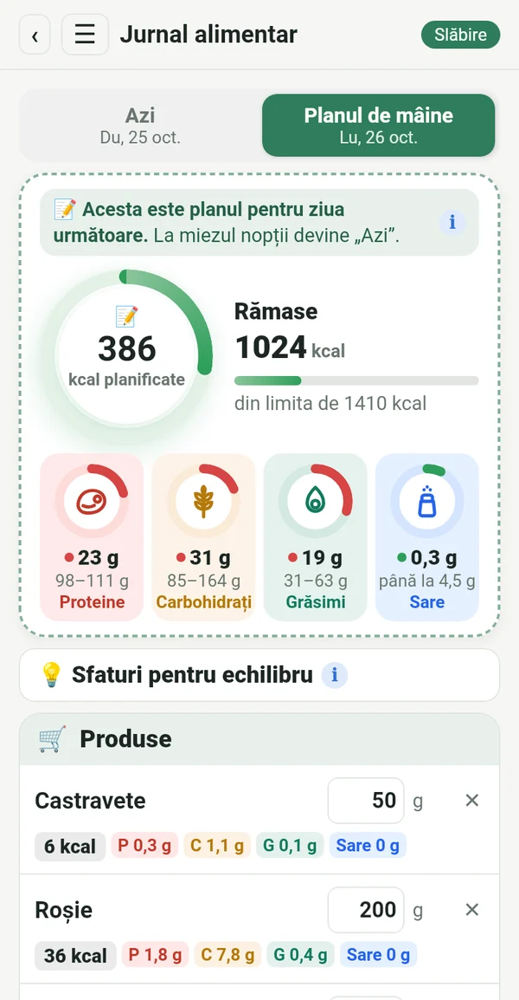
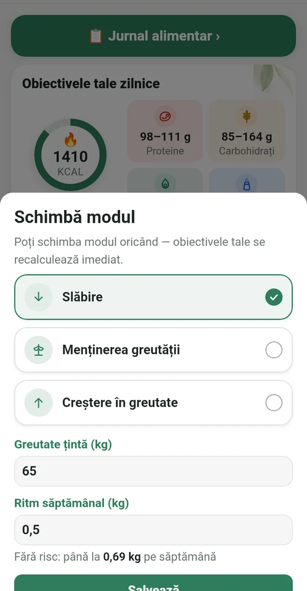
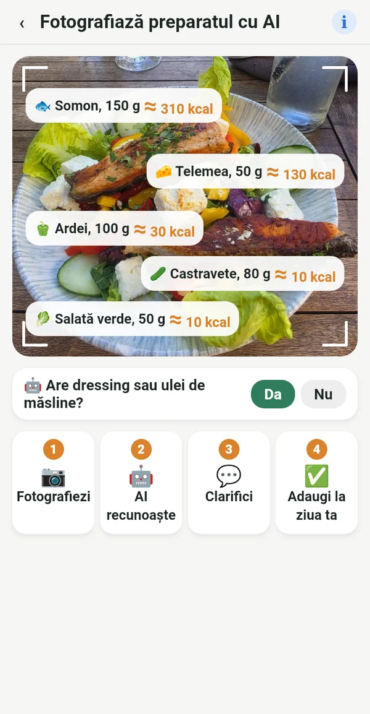

Tot ce îți trebuie, nimic în plus

De pe etichetă, nu din baze străine
Copiezi valorile la 100 g de pe ambalaj sau pur și simplu fotografiezi eticheta. Cifrele se potrivesc cu ce mănânci cu adevărat.
📷 O fotografie a etichetei cu AI completează câmpurile în locul tău
Cartea ta de bucate digitală
Rețetele din caietul bunicii, din cărțile de bucate de pe raft și din grupurile tale preferate, toate într-un singur loc. Le introduci o dată și le folosești mereu.

Porția exactă din toată oala
Cântărești preparatul gata împreună cu oala. Macrolia scade oala și calculează exact cât ai mâncat.

Planifici, cumperi, mănânci
Încă de azi notezi ce vei mânca mâine. Cumperi doar ce îți trebuie, iar la miezul nopții planul devine ziua ta.

Slăbire, menținere sau creștere în greutate
Când ajungi la obiectiv, treci pe „Menținerea greutății”. Dacă viața se schimbă, schimbi pur și simplu modul. Limita zilnică urmează formula Mifflin-St Jeor și recomandările clinice, într-un ritm sigur.

Și în oraș știi ce mănânci
Fotografiezi farfuria, iar AI recunoaște ce e în ea. Valoarea e aproximativă și marcată cu ≈. Mai bine aproximativ decât deloc.
Calorii din mișcare
Prin Health Connect, de pe telefon, ceas sau o aplicație de fitness. Tu alegi cât se adaugă la limită.
Greutate, grafic, raport
Graficul greutății, fotografii înainte și după doar pentru tine și raport în PDF și Excel.
Sfaturi de echilibru
Indicii scurte când proteinele sau grăsimile ies din obiectiv. Ajută, nu comandă.
Pentru fiecare femeie care vrea să rămână pe drumul cel bun
Yo-yo nu vine de la dietă. Vine atunci când te oprești.
După bebeluș, revii la rutina ta.
Vârsta nu e un motiv să renunți.
Și la restaurant știi ce să comanzi.
Cine respectă planul exact obține un rezultat exact.
Datele tale sunt doar ale tale
Totul rămâne pe telefonul tău. Fără înregistrare, reclame sau urmărire. Fotografia pentru analiza AI se trimite doar pentru calcul și nu se păstrează.
Abonament
Abonament lunar sau anual, ambele cu 7 zile gratuite. Anulezi oricând din Google Play.
În 14 limbi, cu temă deschisă și închisă.
Întrebări
Când apare aplicația?
Pregătim lansarea pe Google Play. Scrie-ne și îți spunem când e gata.
Există versiune pentru iPhone?
Deocamdată doar pentru Android. O versiune pentru iPhone e planificată mai târziu.
De ce nu există scanner de coduri de bare?
Bazele de coduri de bare sunt completate de utilizatori și sunt des greșite sau vechi. În Macrolia fiecare valoare vine de pe etichetă, de aceea cifrele sunt exacte.
Câte fotografii cu AI pot face?
Până la 100 de fotografii pe lună, pentru etichete și preparate împreună.